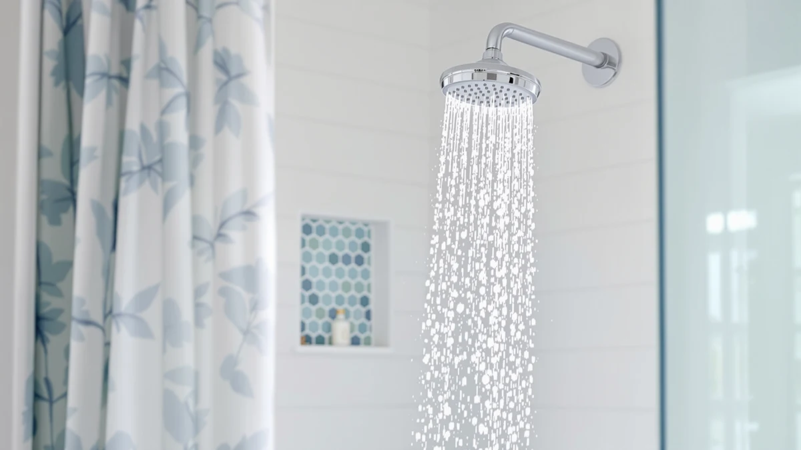

Best Shower Heads with Filters for Hard Water (2026)
Prices and picks verified as of September 2026. Independent, reader-supported reviews.


Quick Answer
We compared seven of the best shower heads with filters for hard water on filtration design, price, and verified owner ratings. The Filtered Shower Head with Handheld holds the strongest rating-to-price combination of the group, at 4.9 stars across 87 reviews for $19.99.
Our pick: Filtered Shower Head with Handheld ($19.99) Check Price on Amazon
Bottom line: our top pick is the Filtered Shower Head with Handheld at $19.99. The best budget option is the Magichome Filtered Shower Head with Handheld at $18.99.
Things to Know Before You Buy
- Filter cartridges typically need replacing every two to six months depending on your water hardness, so check whether replacement cartridges are sold separately before you buy.
- Most shower heads with filters for hard water use activated carbon, KDF media, or a stacked multi-stage cartridge, and a higher stage count generally means more filtration media but also more resistance in the flow.
- A handheld wand adds flexibility for washing pets or rinsing a tub, while a fixed head keeps installation and cleaning simpler.
- A rating built on a small number of reviews can shift quickly, so weigh a 5.0 star average from 30 buyers differently than a 4.6 star average from over a thousand.
- Every head in this guide uses an ABS plastic body with chrome plating, which keeps cost down but won't feel as solid as a metal fixture.
The best shower heads with filters for hard water combine multi-stage filtration with steady water pressure, so mineral buildup stops clogging the head and drying out your skin and hair. Hard water leaves white scale on fixtures and can leave hair feeling stiff and skin feeling itchy after every shower, and a filter cartridge inside the head is one of the simplest fixes a renter or homeowner can install without calling a plumber. We compared seven filtered shower heads on price, filter design, and verified owner ratings to help you pick one that fits your bathroom and your water quality.
Our pick for most households is the Filtered Shower Head with Handheld, which pairs a fixed head with a detachable handheld wand and currently holds a 4.9 star average across 87 verified reviews, the strongest rating-to-price combination in this lineup at $19.99. If your household deals with especially heavy scale buildup, the Filtered Shower Head 15 Stage adds more filtration stages and carries a review base of over 1,100 buyers, giving you a much larger sample to judge long-term performance against.
We did not install these heads ourselves or run a lab test on flow rate. Instead we compared published specs, listed materials, and the ratings and review counts verified buyers have left on Amazon, then flagged which listings still have too few reviews to draw firm conclusions from. That distinction matters with hard water filters, since scale buildup and filter life show up gradually, and a 5.0 star average built on 30 reviews tells you less than a 4.6 star average built on more than a thousand.
Why You Should Trust Us
Best Shower Heads is run by Ilane Tall, who covers bathroom fixtures and water quality products for this site. We are a research-based review site, not a testing lab: we do not own, install, or live with every shower head we cover. Instead we compare manufacturer specs, listed materials and dimensions, verified pricing, and the ratings and review counts Amazon buyers have posted, and we flag when a listing has too few reviews to trust fully. When we recommend shower heads with filters for hard water, we prioritize products with transparent specs and a real review history over marketing claims we can't verify.
How We Picked
We started by pulling every filtered shower head in our product database tagged for hard water use and removed listings with vague or missing filtration specs. From there we compared price against filtration claims, since a $49.95 head needs to justify itself against a $19.99 head built from the same chrome-plated ABS. We also weighted verified review counts heavily: a product with close to 19,000 reviews, like the AquaHomeGroup Luxury Filtered Shower Head, carries a different level of confidence than a newer listing with only a few dozen. Finally we grouped picks so this guide covers a range of budgets and features rather than seven near-identical options.
How We Compared
We did not run our own lab tests on flow rate or filter lifespan for these shower heads with filters for hard water. Instead we compared each listing's stated materials, dimensions, filtration stage count, and price, then cross-referenced that against the star rating and number of verified reviews Amazon shows for each product. Where a listing named a specific stage count, like the 15 Stage model in this guide, we treated that as a meaningful filtration signal. Where two products shared the same body material and price but differed mainly in review volume, we favored the one with a longer track record of verified owner feedback, since that history is the closest proxy we have to real-world durability without physically testing every unit ourselves.
Our Picks

Filtered Shower Head with Handheld
What we like
- Highest average rating in this guide, at 4.9 out of 5
- Handheld wand plus fixed head covers more use cases than a single fixed unit
- Priced at $19.99, among the least expensive options here
Flaws but not dealbreakers
- Only 87 verified reviews, a smaller sample than some competitors
- Filter cartridge life and replacement cost aren't listed on the product page
| Material | ABS + chrome plating |
| Size | — |
The Filtered Shower Head with Handheld pairs a fixed overhead unit with a detachable handheld wand, letting you switch between a standing rinse and a directed spray for washing a tub or a pet. It's built from ABS plastic with chrome plating, matching the construction of most heads in this lineup, and it holds a 4.9 star average across 87 verified Amazon reviews, the highest rating of any product we compared for this guide. At $19.99, it undercuts several competitors with lower or unlisted ratings, which is why it's our top pick for most people shopping for shower heads with filters for hard water.
The main caveat is review volume. Eighty-seven reviews is a real sample, but it's smaller than the 1,144 reviews backing the Filtered Shower Head 15 Stage, so the 4.9 average has less data behind it and could shift as more buyers weigh in. The listing also doesn't specify how many filtration stages the cartridge uses or how often you'll need to replace it, information that matters more the harder your water is. If you want a fixed-and-handheld combo and are comfortable with a newer review history, it's a strong value. If you'd rather see a longer track record first, compare it against the 15 Stage model below.

FEELSO Filtered Shower Head with
What we like
- Handheld design similar to our top pick
- Priced close to the top pick, at $20.99
- ABS and chrome construction consistent with the rest of this lineup
Flaws but not dealbreakers
- No published rating or review count yet, so there's no verified feedback to weigh
- Costs a dollar more than our top pick without a track record to justify it
| Material | ABS + chrome plating |
| Size | — |
The FEELSO Filtered Shower Head follows the same basic formula as our top pick: a fixed head, a detachable wand, and a filter cartridge built into the housing, all wrapped in the same ABS and chrome-plated construction used across this lineup. At $20.99 it sits close in price to the Filtered Shower Head with Handheld, but Amazon doesn't yet show a star rating or review count for this listing, so we have no verified owner feedback to compare against its price.
That gap in review history is the main reason it lands as an also-great option rather than our top pick. We compared its listed materials and design against the rest of the field and found nothing that sets it apart functionally, but without ratings or reviewer comments we can't confirm how the filter performs against hard water over time or whether the handheld hose holds up to daily use. If you'd rather buy a filtered shower head with an established review base, the Filtered Shower Head with Handheld or the 15 Stage model give you more verified data to go on.

Filtered Shower Head 15 Stage
What we like
- 15-stage filter cartridge, the most detailed filtration claim in this guide
- 1,144 verified reviews, the second-largest review base we compared
- Matches our top pick's price, at $19.99
Flaws but not dealbreakers
- 4.6 star average is solid but trails the top two picks
- More filtration stages can mean more media to replace over time, and the listing doesn't specify a replacement schedule
| Material | ABS + chrome plating |
| Size | — |
The Filtered Shower Head 15 Stage names its filtration process directly in the title, and a 15-stage cartridge is the most detailed filtration claim of any product we compared for this guide. It's priced at $19.99, tying the Filtered Shower Head with Handheld for the least expensive option here, and it carries a 4.6 star average built on 1,144 verified reviews, by far the largest review sample among the seven heads we looked at outside of the AquaHomeGroup pick.
That review volume is the strongest argument for this head if you're shopping specifically for hard water performance: over a thousand buyers have weighed in, which gives the 4.6 average more statistical weight than the newer listings in this guide. The tradeoff is that a 15-stage filter is a more complex cartridge than a simpler design, and the listing doesn't say how often you'll need to replace it or what a replacement costs. If your water is heavily mineralized and you want the filtration option with the most reviewer feedback behind it, this is the pick to compare against our top choice.

AquaHomeGroup Luxury Filtered Shower Head
What we like
- 18,686 verified reviews, dramatically more than any other product in this guide
- "Luxury" positioning suggests additional spray settings beyond a basic filtered head
- Long review history gives a stable, trustworthy rating over time
Flaws but not dealbreakers
- At $49.95, it costs more than double most other picks in this guide
- 4.4 star average is the lowest of the rated products in this guide
| Material | ABS + chrome plating |
| Size | — |
The AquaHomeGroup Luxury Filtered Shower Head is priced well above the rest of this lineup at $49.95, more than double the cost of our budget-friendly picks, and it's backed by 18,686 verified Amazon reviews, a review base so much larger than anything else we compared that it's effectively in its own category for reliability of data. Its 4.4 star average is technically the lowest rating among the products with a published score in this guide, but with that many reviews behind it, the average is far less likely to swing based on a handful of complaints.
The higher price buys a longer market history and, based on the listing, a broader set of spray settings than the simpler filtered heads here, positioned as a luxury option rather than a budget fix for hard water. If you've been burned before by a filtered head that stopped working well within a few months, the sheer size of this review base makes it easier to trust that the rating reflects real long-term performance rather than an early honeymoon period. If budget matters more than history, the Filtered Shower Head with Handheld or the 15 Stage model deliver similar core functionality for less than half the price.

Filtered Shower Head with Handheld
What we like
- 5.0 star average, the highest possible rating and the best score in this guide
- Same fixed-plus-handheld design as our top pick
Flaws but not dealbreakers
- Only 30 verified reviews, the smallest sample of any rated product in this guide
- Costs about three dollars more than our top pick despite a smaller review base
| Material | ABS + chrome plating |
| Size | — |
This Filtered Shower Head with Handheld shares its fixed-and-handheld design with our top pick but comes from a separate listing, priced slightly higher at $22.79 and currently sitting at a perfect 5.0 star average. A perfect score sounds like the easy winner, but it's built on only 30 verified reviews, a fraction of the review base behind our top pick or the 15 Stage model.
Small sample sizes swing more easily than large ones, so a single unhappy buyer could move this rating noticeably in either direction as more reviews come in. We're not discounting the early feedback, thirty genuine five-star reviews is a good early sign, but we'd weigh it as a promising newer option rather than a proven one. If you want the safety of a larger review history at a lower price, start with our top pick instead and treat this one as a backup.

PWERAN Filtered Shower Head with
What we like
- Compact 9 by 3 inch head, the only product in this guide with a listed size
- Priced at $19.99, matching our top pick
Flaws but not dealbreakers
- No published rating or review count, so there's no verified owner feedback yet
- Smaller head size may deliver a narrower spray pattern than larger heads in this guide
| Material | ABS + chrome plating |
| Size | 9 inches x 3 inches |
The PWERAN Filtered Shower Head is the only product in this guide with a listed size, at 9 inches by 3 inches, which makes it a reasonable fit for a smaller stall or a shower with limited clearance around the arm. It's priced at $19.99, tying our top pick, and it uses the same ABS and chrome-plated construction as the rest of the lineup.
Amazon doesn't show a star rating or review count for this listing, so we can't verify how well it holds up against hard water in practice, and the compact head size may trade off some spray coverage compared to the larger units in this guide. We compared it mainly on price and dimensions rather than owner feedback, since none exists yet. If a compact footprint matters more than a proven track record, it's worth a look. If you'd rather see verified reviews first, the Filtered Shower Head with Handheld or the 15 Stage model give you more to go on.

Magichome Filtered Shower Head with
What we like
- Consistent ABS and chrome-plated build matching the rest of this lineup
- Sits in the middle of this guide's price range, at $24.99
Flaws but not dealbreakers
- No published rating or review count, so there's no verified feedback to weigh
- Priced higher than four of the six other picks without a review history to justify it
| Material | ABS + chrome plating |
| Size | — |
The Magichome Filtered Shower Head lands in the middle of this guide's price range at $24.99, more expensive than our top pick and the 15 Stage model but less than the AquaHomeGroup Luxury option. Construction matches the rest of the lineup, an ABS plastic body with chrome plating, and the listing doesn't show a star rating or verified review count as of this writing.
Without reviewer feedback, we compared it on price and construction alone, and neither sets it apart from the less expensive options in this guide that share the same materials. That makes it harder to justify over the top pick or the 15 Stage model unless a specific feature on this listing, like included handheld hose length, matters to your bathroom setup. We'd recommend checking current reviews on Amazon directly before buying, since review counts change faster than this guide can track.
Quick Comparison
| Product | Material | Price | Rating | Best for | Get it |
|---|---|---|---|---|---|
| Filtered Shower Head with Handheld | ABS + chrome plating | $19.99 | 4.9 | Best overall value | View on Amazon → |
| FEELSO Filtered Shower Head with | ABS + chrome plating | $20.99 | 4 | Budget handheld pick | View on Amazon → |
| Filtered Shower Head 15 Stage | ABS + chrome plating | $19.99 | 4.6 | Most filtration stages | View on Amazon → |
| AquaHomeGroup Luxury Filtered Shower Head | ABS + chrome plating | $49.95 | 4.4 | Most reviewed, premium | View on Amazon → |
| Filtered Shower Head with Handheld | ABS + chrome plating | $22.79 | 5.0 | Newer, perfect rating | View on Amazon → |
| PWERAN Filtered Shower Head with | ABS + chrome plating | $19.99 | 4 | Compact spaces | View on Amazon → |
| Magichome Filtered Shower Head with | ABS + chrome plating | $24.99 | 4 | Mid-range alternative | View on Amazon → |
The Competition
We didn't include filtered shower heads without a listed filtration approach or with pricing well outside this guide's range, since the goal here is a direct comparison of shower heads with filters for hard water specifically, not general fixtures. Standard shower heads without any filter cartridge are excluded entirely, since a filter is the whole point of this list, and passing them off as hard water solutions would be misleading. A few other listings looked similar to the seven above on paper but had far fewer reviews than the picks we included, or no reviews at all, and we prioritized options where we had at least some verified owner feedback to compare against manufacturer claims. That's why the FEELSO, PWERAN, and Magichome picks appear here as also-great options rather than top picks: they made the cut on price and construction, but don't yet have the review history our top picks have built up.
The Verdict
Across the best shower heads with filters for hard water we compared, the Filtered Shower Head with Handheld is the pick for most people: it combines the highest rating in this lineup with one of the lowest prices, and it covers both fixed and handheld use in one kit. Buyers dealing with especially heavy mineral buildup should weigh the Filtered Shower Head 15 Stage instead, since its larger review base and extra filtration stages make it a reasonable tradeoff for a nearly identical price.
Frequently Asked Questions
A filter cartridge inside the head can reduce sediment, chlorine, and some dissolved minerals that contribute to hard water buildup, but no shower head filter fully softens water the way a whole house water softener does. Owners of the products in this guide report less visible scale on the head itself and softer feeling water, though results vary with how hard your local water actually is.
Manufacturers typically recommend replacing a shower head filter cartridge every two to six months, and harder water shortens that window because more minerals get trapped faster. None of the listings in this guide specify an exact replacement cost, so check the current listing before buying if cartridge availability matters to you.
More stages help only up to a point. The Filtered Shower Head 15 Stage in this guide uses more filtration stages than the other picks and has a large verified review base to back it up, but extra stages can also add resistance inside the cartridge, which can slightly reduce water pressure. Verified review counts are a more reliable signal than stage count alone.